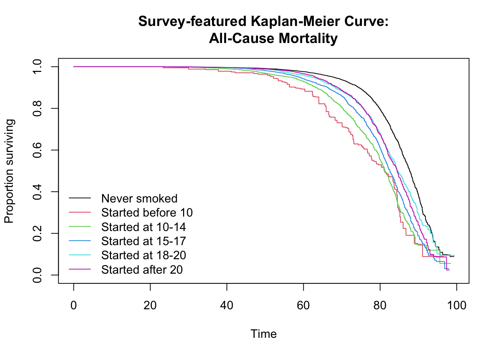

10 Survival Analysis
This section performs the main survival analyses to investigate the association between early smoking initiation and all-cause mortality. We will first visualize survival probabilities using Kaplan-Meier curves and then estimate hazard ratios (HRs) with survey-weighted Cox Proportional Hazards models. This section directly reproduces the “Statistical Analysis” and “Results” sections of the published paper. Specifically, Figure 1 (Kaplan-Meier curve) and Figure 2 (the crude/adjusted HRs) of the original paper.
This chapter will reproduce the paper’s core survival analyses using the following methods:
| Analysis/Visualization | Key R Function(s) | Purpose | Reproduces |
|---|---|---|---|
| Kaplan-Meier Curve |
svykm(), svylogrank()
|
Visualize and test differences in survival probabilities between exposure groups. | Figure 1 |
| Crude Cox Model | svycoxph() |
Estimate the unadjusted association between smoking initiation and mortality. | Figure 2 (Crude HRs) |
| Adjusted Cox Model | svycoxph() |
Estimate the association while controlling for confounders (sex, race, survey year). | Figure 2 (Adjusted HRs) |
- R Code Chunk 1: Load Data and Survey Design Object
We begin by loading the final, complete-case analytic dataset (dat.complete) and the survey design object (w.design0) that were created in the previous chapters. The w.design0 object is essential for ensuring our analysis accounts for the complex NHANES survey design.
10.1 Kaplan-Meier Survival Analysis (Figure 1)
- R Code Chunk 2: Kaplan-Meier Curves and Log-Rank Test
Kaplan-Meier Curves
The following code visualizes the survival probabilities over time using Kaplan-Meier (KM) curves, stratified by the exposure.cat (age at smoking initiation) variable. The KM curves illustrate the proportion of participants surviving over their follow-up time from birth. The svykm() function from the survey package is used to calculate the survival estimates while accounting for the complex survey design. The resulting plot reproduces the trends shown in Figure 1 of the original paper.
Show/Hide Code
# Define the survival formula
formulax0 <- as.formula(Surv(stime.since.birth, status_all)
~ exposure.cat)
# Calculate survey-weighted Kaplan-Meier curves
sA <- svykm(formulax0, design = w.design0)
saveRDS(sA, file = "data/sA.rds")
# Dynamically set the number of colors for the legend
dummy <- length(unique(as.factor(w.design0$variables$exposure.cat)))
# Plot the Kaplan-Meier curves
plot(sA, pars = list(col = c(1:dummy)),
xlab = "Time",
ylab = "Proportion surviving",
main = "Survey-featured Kaplan-Meier Curve:
All-Cause Mortality")
legend("bottomleft",
levels(as.factor(w.design0$variables$exposure.cat)),
col = (1:dummy), lty = c(1,1),
bty = "n")
Log-Rank Test
After plotting the curves, a survey-weighted log-rank test is performed using svylogrank() to statistically determine if there are significant differences in survival curves among the exposure groups. A significant p-value from this test would indicate a statistically significant difference in survival experiences between the age groups of smoking initiation. The paper states that the log-rank test was significant.
To present these results more formally, the following code uses knitr::kable() to display the full test output, including the Chi-squared statistic and degrees of freedom, in a clean table.
Show/Hide Code
| Test Statistic | Standard Error | Z-value | p-value |
|---|---|---|---|
| 146771.4 | 33970.03 | 4.32 | 0.00 |
| 1057040.8 | 110866.82 | 9.53 | 0.00 |
| 1215922.9 | 137852.17 | 8.82 | 0.00 |
| 259155.7 | 128215.04 | 2.02 | 0.04 |
| 235676.6 | 91478.11 | 2.58 | 0.01 |
10.2 Cox Proportional Hazards Models (Figure 2)
10.2.1 Unadjusted Model (Crude HRs)
- R Code Chunk 3: Unadjusted Cox Model (for Comparison)
The following code demonstrates a standard, un-weighted Cox proportional hazards model using base R’s coxph() function on the dat.complete dataset. This model does not account for the complex survey design of NHANES and is included as a baseline, primarily for comparison or to understand how unweighted models would be run. The publish() function is used to format the model output for easier interpretation.
Show/Hide Code
# Fit an un-weighted Cox Proportional Hazards model
fit0 <- coxph(Surv(stime.since.birth, status_all) ~ exposure.cat,
data = dat.complete)
# Use 'publish' to format the output for display
publish(fit0)
#> Variable Units HazardRatio CI.95 p-value
#> exposure.cat Never smoked Ref
#> Started before 10 2.44 [1.99;3.00] <0.001
#> Started at 10-14 2.37 [2.19;2.58] <0.001
#> Started at 15-17 1.92 [1.79;2.06] <0.001
#> Started at 18-20 1.51 [1.40;1.62] <0.001
#> Started after 20 1.51 [1.39;1.64] <0.001- R Code Chunk 4: Unadjusted Survey-Weighted Cox Proportional Hazards Model
The following code fits the unadjusted Cox proportional hazards model, but it uses svycoxph() from the survey package to account for the complex NHANES survey design. This model examines the crude association between smoking initiation categories and all-cause mortality, producing Hazard Ratios. The publish() function is used to format the model output for easier interpretation. The HRs from this model contribute to the “Crude” estimates shown in Figure 2 of the paper.
Show/Hide Code
# Fit the unadjusted survey-weighted Cox Proportional Hazards model
fit0 <- svycoxph(Surv(stime.since.birth, status_all) ~ exposure.cat,
design = w.design0)
# Use 'publish' to format the output for display
f0 <- publish(fit0)
#> Stratified 1 - level Cluster Sampling design (with replacement)
#> With (301) clusters.
#> subset(w.design, miss == 0 & survey.weight.new > 0)
#> Variable Units HazardRatio CI.95 p-value
#> exposure.cat Never smoked Ref
#> Started before 10 3.01 [2.29;3.95] <0.001
#> Started at 10-14 2.60 [2.32;2.92] <0.001
#> Started at 15-17 2.07 [1.88;2.28] <0.001
#> Started at 18-20 1.55 [1.40;1.72] <0.001
#> Started after 20 1.60 [1.45;1.76] <0.001- R Code Chunk 5: Process Unadjusted Hazard Ratios for Plotting
The output from publish() is a formatted table, but for plotting, we need a clean data frame of the results.
The following code extracts the Hazard Ratios and their 95% Confidence Intervals from the unadjusted survey-weighted Cox Model (f0). The stringr package is used to parse the confidence interval strings into separate lower and upper bound numeric columns.
Show/Hide Code
# Select HR and CI columns for exposure categories from 'f0'
f0r <- f0$regressionTable[2:6,c("HazardRatio","CI.95")]
# Add a 'group' column to label these results as "Crude" for plotting
f0r$group <- "Crude"
# Extract lower and upper bounds from the CI string
ci <- str_extract_all(f0r[,2], '\\d+([.,]\\d+)?', simplify = TRUE)
f0r$CI.l <- as.numeric(as.character(ci[,1])) # Lower bound
f0r$CI.u <- as.numeric(as.character(ci[,2])) # Upper bound
# Rename columns for consistency in plotting
names(f0r) <- c("mean","CI.95","group","lower","upper")
# Display the processed data frame
f0r10.2.2 Adjusted Model (Adjusted HRs)
- R Code Chunk 6: Adjusted Survey-Weighted Cox Proportional Hazards Model
The following code fits the adjusted Cox proportional hazards model, accounting for the complex survey design and controlling for key covariates. As described in the paper, the model is adjusted to account for sex, race/ethnicity, and survey cycle. This model estimates the adjusted Hazard Ratios, which contribute to the “Adjusted” estimates shown in Figure 2 of the paper.
Show/Hide Code
# Fit the adjusted survey-weighted Cox Proportional Hazards model
fit1 <- svycoxph(Surv(stime.since.birth, status_all) ~ exposure.cat +
sex + race + year.cat, design = w.design0)
# Use 'publish' to format the output for display
f1 <- publish(fit1) # Store the published output
#> Stratified 1 - level Cluster Sampling design (with replacement)
#> With (301) clusters.
#> subset(w.design, miss == 0 & survey.weight.new > 0)
#> Variable Units HazardRatio CI.95 p-value
#> exposure.cat Never smoked Ref
#> Started before 10 2.71 [2.05;3.58] < 0.001
#> Started at 10-14 2.38 [2.11;2.68] < 0.001
#> Started at 15-17 1.96 [1.77;2.16] < 0.001
#> Started at 18-20 1.48 [1.33;1.64] < 0.001
#> Started after 20 1.54 [1.39;1.70] < 0.001
#> sex Male Ref
#> Female 0.75 [0.70;0.80] < 0.001
#> race White Ref
#> Black 1.59 [1.47;1.73] < 0.001
#> Hispanic 1.03 [0.93;1.15] 0.55581
#> Others 1.15 [0.97;1.37] 0.10079
#> year.cat 1999-2000 Ref
#> 2001-2002 0.96 [0.86;1.08] 0.50457
#> 2003-2004 0.84 [0.75;0.94] 0.00328
#> 2005-2006 0.76 [0.67;0.85] < 0.001
#> 2007-2008 0.77 [0.67;0.90] < 0.001
#> 2009-2010 0.68 [0.59;0.78] < 0.001
#> 2011-2012 0.62 [0.51;0.76] < 0.001
#> 2013-2014 0.58 [0.48;0.69] < 0.001
#> 2015-2016 0.35 [0.27;0.45] < 0.001
#> 2017-2018 0.20 [0.13;0.29] < 0.001- R Code Chunk 7: Process Adjusted Hazard Ratios for Plotting
The following code follows the similar processing done for the unadjusted model, but applies it to the results of the adjusted survey-weighted Cox model.
Show/Hide Code
# Select Hazard Ratio and CI columns for exposure categories from 'f1'
f1r <- f1$regressionTable[2:6,c("HazardRatio","CI.95")]
# Add a 'group' column to label these results as "Adjusted"
f1r$group <- "Adjusted"
# Extract lower and upper bounds from the CI string
ci <- str_extract_all(f1r[,2], '\\d+([.,]\\d+)?', simplify = TRUE)
f1r$CI.l <- as.numeric(as.character(ci[,1]))
f1r$CI.u <- as.numeric(as.character(ci[,2]))
# Rename columns for consistency in plotting
names(f1r) <- c("mean","CI.95","group","lower","upper")
# Display the processed data frame
f1r 10.3 Saving Model Results
- R Code Chunk 8: Save Processed Results
Finally, we save the two processed data frames (f0r and f1r) containing the crude and adjusted results. These files will be loaded in the next section to create the plot that visualizes these findings (Figure 2 of paper).
This completes the survival analysis section of the statistical analysis stage.
10.4 Chapter Summary and Next Steps
We have now completed the main survival analysis. We successfully reproduced the Kaplan-Meier curves (Figure 1 from the paper) to visualize survival probabilities and fitted both crude and adjusted survey-weighted Cox models to estimate the hazard ratios, replicating the core findings presented in Figure 2.
The results show a clear association between early smoking initiation and mortality. The next logical step, covered in the “Effect Modification Analysis” chapter, is to investigate whether this association differs across key demographic groups.